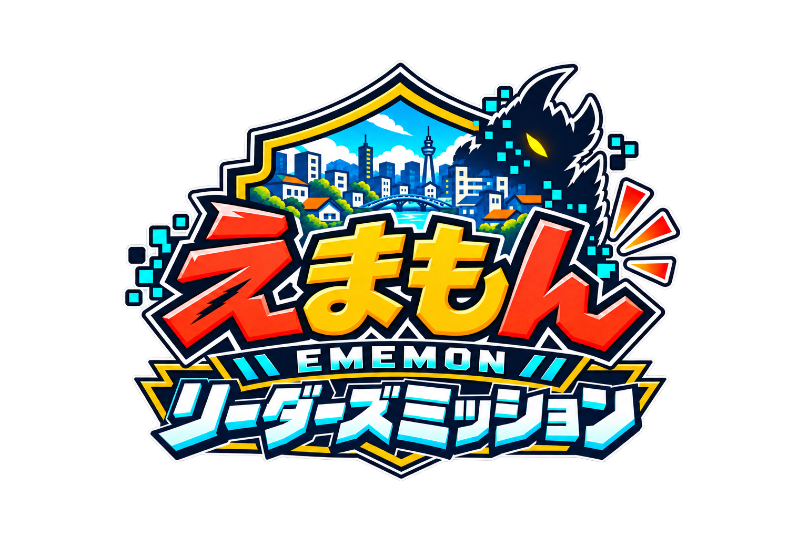

みんなで挑戦！ 5つの証を集めよう
冒険の絵を準備中
0 / 18
冒険の絵を準備しています…
通信を確認して、もう一度お試しください。進行は変わりません。
キッズ防災リーダーすごろく · ベータ版監修：森谷哲（防災士）
冒険の準備
変更しても、現在地と証はそのままです。キャラクター正本をもとにした、コマ用試作イラストです。
ページを開くと音はOFFです。音ONを押すとBGMと効果音が鳴ります。音量は別々に変えられます。音量だけをこのブラウザに保存します。
低学年／高学年は新しく始める時に選択。おすすめ5ミッションに適用します。旧カードと実物体験カードは共通です。
途中で閉じても、この端末・このブラウザから再開できます。閉じていた時間は計測しません。
目安25分前後。急がず楽しもう。実物版は走らず、同じマスに重なって立ちません。
この端末・このブラウザ内に進行を保存。閉じた後は「続きから再開」。別端末への同期はありません。ゲーム独自の認定です。公的資格や救助技能の認定ではありません。
使いたいカードを選びます。各属性に1枚以上が必要です。体験カードの内容はイベントに合わせて書き換えられます。
変更は次に引くカードから反映。いま挑戦中のカードは変わりません。設定はこのブラウザだけに保存されます。
いまのカードの回答は消えます。証やほかの進行はそのままです。
★は必ず止まるガーディアン。タップして説明を確認できます。
現在地・証・道具・回答・時間をこのブラウザに保存します。TOPの「つづきから」で再開できます。
このブラウザに保存された現在地・証・道具・回答・時間がリセットされます。難易度・人数・コマは初期設定に戻ります。カード設定は残ります。